조경기사 (2021-05-15 기출문제)
1과목: 조경사
1. 미국 도시계획사에서 격자형 가로망을 벗어나서 자연스러운 가로 계획으로 시카고에 리버사이드 주택단지를 최초로 시도한 사람은?
- 찰스 엘리어트(Charles Eliot)
- 엔드류 다우닝(Andrew J. Downing)
- 캘버트 보(Calvert Vaux)
- 프레드릭 로 옴스테드(Frederick L. Olmsted)
(정답률: 67%)

2. 고대 로마 소 플리니의 별장정원으로 전망이 좋은 터에 다양한 종류의 과일나무와 여러 가지 모양으로 다듬어진 회양목 토피아리를 장식한 곳은?
- 아드리아나장(Villa Adriana)
- 라우렌틴장(Villa Laurentiana)
- 디오메데장(Villa Diomede)
- 토스카나장(Villa Toscana)
(정답률: 72%)
3. 이탈리아 바로크 양식의 대표적인 작품은?
- 에스테장(Villa d'Este)
- 랑테장 (Villa Lante)
- 이졸라벨라 (Isola Bella)
- 보볼리가든(Boboli Garden)
(정답률: 80%)
4. 뉴욕 센트럴 파크의 설명으로 옳지 않은 것은?
- 옴스테드의 단독 설계안을 두어 보우(Vaux)가 시공하였다.
- 장방형의 공원부지 내 도로망은 대부분 자유 곡선에 의하여 처리되고 있다.
- 4개의 횡단도로는 지하도(地下道)로서 소통하고 있다.
- 현대 공원으로서의 기본적 요소를 갖춘 최초의 공원이다.
(정답률: 79%)
5. 별장생활이 발달하게 됨에 따라 정원에 Topiary가 다양한 형태(글자, 인간이나 동물, 사냥이나 선대(船隊)의 항해 장면 등)로 등장하여 발달된 시기는?
- 고대 로마
- 고대 그리스
- 고대 이집트
- 고대 메소포타미아
(정답률: 78%)
6. 17세기 프랑스의 르노트르 정원구성 특징으로 옳지 않은 것은?
- 비스타를 형성한다.
- 탑과 녹정을 배치한다.
- 정원은 광대한 면적의 대지 구성요소의 하나로 보고 있다.
- 대지의 기복에 조화시키되 축에 기초를 둔 2차원적 기하학을 구성한다.
(정답률: 76%)
7. 신라 포석정은 곡수거를 만들어 곡수연을 하였다는데 이것은 중국 진시대의 누구의 영향인가?
- 주돈이의 애연설
- 왕희지의 난정고사
- 도연명의 귀거래사
- 중장통의 락지론
(정답률: 66%)
8. 다음 중 창덕궁 후원의 기능에 부합되지 않는 것은?
- 왕과 그의 가족을 위한 휴식의 공간이다.
- 학업을 수학하여 사물의 통찰력을 기른다.
- 자연 속에 둘러 싸여 현실의 속박에서 벗어나 안식을 얻는다.
- 상징적 선산(仙山)을 조산(造山)하여 축경(縮景)적 조망(眺望)을 한다.
(정답률: 65%)
9. 이탈리아의 노단식(露壇式) 정원과 프랑스의 평면기하학식 정원이 성립되는데 결정적 역할을 한 시대사조 및 배경은?
- 국민성의 차이
- 지형적 조건의 차이
- 정원 소유주(所有主)의 권위 정도
- 천재적(天才的)인 조경가의 역할 유무
(정답률: 91%)
10. 하하(Ha-Ha Wall) 수법이란?
- 담장을 관목류의 생울타리로 조성하여 자연과 조화되게 구성하는 수법
- 담장의 형태나 색채를 주변 자연과 조화되게끔 만드는 수법
- 담장의 높이를 낮게 하여 외부경관을 차경(借景)으로 이용하는 수법
- 담장 대신 정원대지의 경계선에 도랑을 파서 외부로부터의 침입을 막도록 한 수법
(정답률: 74%)
11. 고려시대에 궁권과 관가의 정원을 관장하던 관서명은?
- 다방(茶房)
- 상림원(上林園)
- 장원서(掌苑署)
- 내원서(內園署)
(정답률: 74%)
12. 백제시대 방장선산(方丈仙山)을 상징하여 꾸며 놓은 신선 정원은?
- 임류각(臨流閣)
- 월지(月池)
- 궁남지(宮南池)
- 임해전지(臨海殿址)
(정답률: 74%)
13. 일본의 비조(아스카, AD 503~709) 시대에 백제 사람 노자공이 이룩한 조경에 관한 설명으로 틀린 것은?
- 일본서기의 추고 천왕 20년조의 기록에서 볼 수 있다.
- 남쪽 뜰에 봉래섬과 수루를 만들었다.
- 수미산은 중국의 불교적 세계관을 배경으로 하고 있다.
- 지기마려(芝耆磨呂)는 노자공의 다른 이름이다.
(정답률: 63%)
14. 백제 정림사지에 관한 설명 중 가장 관계가 먼 것은?
- 1탑 1금당식
- 5층 석탑 배치
- 원내 방지의 도입
- 구릉지 남사면에 위치
(정답률: 64%)
15. 중국 조경사에 있어서 유럽식 정원이 축조되었던 곳은 어느 곳인가?
- 이화원
- 사자림
- 유원
- 원명원
(정답률: 79%)
16. 중국정원의 조형적 특성에 대한 설명으로 옳지 않은 것은?
- 주택 건물 사이에 중정을 조성했다.
- 사실주의에 의한 풍경식이 나타나고 있다.
- 주거용으로 쓰이는 건물의 뒤나 좌우 공지에 축조했다.
- 자연경관을 주 구성용으로 삼고 있기는 하나 경관의 조화보다는 대비에 중점을 두었다.
(정답률: 68%)
17. 이집트의 사상은 자연숭배사상과 내세관의 깊은 영향이 반영되어 건축물이 표출되었다. 선(善)의 혼(Ka)을 통해 태양신(Ra)에 접근하려는 기하학적 형태로 인간의 동경과 열망을 대지에 세운 거대한 상징물은?
- 마스터바(Mastaba)
- 피라미드(Pyramid)
- 스핑크스(Sphinx)
- 오벨리스크(Obelisk)
(정답률: 81%)
18. 다음이 주택정원 중 정원 내 연못 수(水)경관이 없는 곳은?
- 구례 운조루
- 괴산 김기응 가옥
- 강릉 선교장
- 달성 박황 가옥
(정답률: 51%)
19. 데르 엘 바하리(Deir-el Bahari)의 신원에서 나타나는 특징이 아닌 것은?
- Punt보랑의 부조
- 인공과 자연의 조화
- 직교축에 의한 공간구성
- 주랑 건축 전면에 파진 식재용 돌구멍
(정답률: 62%)
20. 다음 중 고대 로마의 지스터스(Xystus)에 관한 설명으로 옳지 않은 것은?
- 유보하는 자리라는 의미를 나타낸다.
- 주택 부지의 끝부분에 높은 담장과 건물에 둘러싸인 공간이다.
- 내방객과의 상담이나 업무를 위한 기능 공간이다.
- 세탁물 건조장 또는 채원으로도 활용된다.
(정답률: 78%)
2과목: 조경계획
21. 기본계획의 설명으로 옳은 것은?
- 토지이용계획 : 현재의 토지이용에 따라 계획을 수립한다.
- 교통⋅동선계획 : 주 이용 시기에 발생되는 통행량을 반영한다.
- 시설물배치계획 : 재료나 구조를 구체적으로 명시한다.
- 식재계획 : 보식계획은 실시설계 단계에서 반영한다.
(정답률: 55%)
22. 도심 공원 이용객의 이용행태 조사를 위한 '질문의 순서결정'시 고려해야 할 사항이 아닌 것은?
- 질문 항목간의 관계를 고려하여야 한다.
- 첫 번째 질문은 흥미를 유발할 수 있게 인적사항 질문으로 배치하여야 한다.
- 응답자가 심각하게 고려하여 응답해야 하는 질문은 위치선정에 주의하여야 한다.
- 조사 주제와 관련된 기본적인 질문들을 우선적으로 배치하여야 한다.
(정답률: 77%)
23. 도시⋅군계획시설의 결정⋅구조 및 설치기준에 관한 규칙에 의한 광장의 분류에 포함되지 않는 것은?
- 역전광장
- 중심대광장
- 경관광장
- 옥상광장
(정답률: 68%)
24. 자연공원법에 의한 자연공원의 분류에 해당되지 않는 것은?
- 지질공원
- 도립공원
- 수변공원
- 군립공원
(정답률: 60%)
25. 다음 중 환경영향평가 항목 중 '생활환경분야'에 포함되지 않는 것은?
- 인구
- 위락⋅경관
- 위생⋅공중보건
- 친환경적 자원 순환
(정답률: 59%)
26. 지구단위계획 수립 시 '환경관리'를 계획에 포함하는 사업은 무엇인가?
- 신시가지의 개발
- 기존시가지의 정비
- 기존시가지의 관리
- 기존시가지의 보존
(정답률: 46%)
27. 국토의 계획 및 이용에 관한 법률에 명시된 도시 기반시설 중 교통시설에 해당하지 않는 것은?
- 공항
- 항만
- 주차장
- 광장
(정답률: 75%)
28. 자연환경⋅농지 및 산림의 보호, 보건위생, 보안과 도시의 무질서한 확산을 방지하기 위하여 녹지의 보건이 필요한 녹지지역을 지정할 수 있게 규정한 법은?
- 자연공원법
- 환경영향평가법
- 국토의 계획 및 이용에 관한 법률
- 도시공원 및 녹지 등에 관한 법률
(정답률: 55%)
29. 공장의 조경계획 시 고려사항으로 적합하지 않은 것은?
- 운영관리적 측면을 배려한다.
- 식재계획은 필요한 곳에 국지적으로 처리한다.
- 성장속도가 빠르며 병해충이 적으면서 관리가 쉬운 수종을 선택한다.
- 공장의 성격과 입지적 특성에 따라 개성적인 식재계획이 이루어져야 한다.
(정답률: 67%)
30. 공원 내에 휴게시설인 벤치(의자)에 대한 계획 기준으로 틀린 것은?
- 앉음판에는 물이 고이지 않도록 계획⋅설계한다.
- 장시간 휴식을 목적으로 한 벤치는 좌면을 높게 만든다.
- 의자의 길이는 1인당 최소 45cm를 기준으로 하되, 팔걸이부분의 폭은 제외한다.
- 휴지통과의 이격거리는 0.9m, 음수전과의 이격 거리는 1.5m 이상의 공간을 확보한다.
(정답률: 71%)
31. 고속도로 조경계획 시 가능노선 선정의 고려사항을 도로 이용도와 경제적 측면, 기술적 측면으로 구분할 수 있는데, 다음 중 기술적 측면의 조건에 포함되지 않는 것은?
- 직선도로를 유지하도록 노선을 선정한다.
- 운수속도가 가장 빠른 노선을 선정한다.
- 토량 이동(절⋅성토)이 균형을 이루는 노선을 선정한다.
- 오르막 구배가 너무 급하게 되면 우회노선을 선정한다.
(정답률: 70%)
32. 미기후에 대한 설명 중 틀린 것은?
- 건축물은 미기후에 영향을 미친다.
- 지형, 수륙(해안, 호안, 하안)의 분포, 식생의 유무와 종류는 미기후의 변화 요소이다.
- 현지에서 장기간 거주한 주민과 대화를 통해서도 파악이 가능하다.
- 미기후 요소는 대기요소와 동일하며 서리, 안개, 자외선 등의 양은 제외한다.
(정답률: 71%)
33. 자연공원법에 관한 설명이 옳은 것은?
- 자연공원법은 20년마다 공원구역을 재조정하도록 되어 있다.
- 공원사업의 시행 및 공원시설의 관리는 별도의 예외 없이 환경청이 한다.
- 자연공원의 지정기준은 자연생태계, 경관 등을 고려하여 환경부령으로 정한다.
- 용도지구는 공원자연보존지구, 공원자연환경지구, 공원마을지구, 공원문화유산지구로 구분한다.
(정답률: 65%)
34. 도시공원 및 녹지 등에 관한 법률 시행규칙의 도시공원 유형 중 규모의 제한이 있는 것은?
- 소공원
- 체육공원
- 문화공원
- 역사공원
(정답률: 60%)
35. 조경학의 학문적 정의와 가장 거리가 먼 것은?
- 인공 환경의 미적특성을 다루는 전문 분야
- 외부공간을 취급하는 계획 및 설계 전문 분야
- 인공 환경의 구조적 특성을 다루는 전문 분야
- 토지를 미적⋅경제적으로 조성하는 데 필요한 기술과 예술이 종합된 실천과학
(정답률: 61%)
36. 도시 스카이라인 고려 요소가 아닌 것은?
- 하천의 형태 고려
- 구릉지 높이의 고려
- 조망점과의 관계 고려
- 고충건물의 클러스터(집합형태) 고려
(정답률: 78%)
37. 생태학자인 오덤(Odum)이 제안한 개념 중 개체 혹은 개체군의 생존이나 성장을 멈추도록 하는 요인으로, 인내의 한계를 넘거나 이 한계에 가까운 모든 조건을 지칭하는 용어는?
- 엔트로피(Entropy)
- 제한인자(Limiting Factor)
- 시각적 투과성(Visual Transparency)
- 생태적 결정론(Ecological Determinism)
(정답률: 73%)
38. 조경계획의 한 과정인 '기본구상'의 설명이 옳지 않은 것은?
- 추상적이며 계량적인 자료가 공간적 형태로 전이되는 중간 과정이다.
- 서술적 또는 다이어그램으로 표현하는 것은 의뢰인의 이해를 돕는데 바람직하지 못하다.
- 자료의 종합분석을 기초로 하고 프로그램에서 제시된 계획방향에 의거하여 계획안의 개념을 정립하는 과정이다.
- 자료 분석과정에서 제기된 프로젝트의 주요 문제점을 명확히 부각시키고 이에 대한 해결방안을 제시하는 과정이다.
(정답률: 75%)
39. 생태적 조경계획에 관한 설명이 옳지 않은 것은?
- Ian McHarg에 의해 주장되었다.
- 생태적 결정론이 하나의 이론적 기초가 된다.
- 생태적 조경계획은 생태전문가에 의해 수행되어야 한다.
- 어떤 지역의 자연적⋅사회적 잠재력이 조경계획을 위해 어떤 기회성과 제한성이 있는가를 판정해야 한다.
(정답률: 62%)
40. 다음 설명의 ( )에 적합한 수치는?
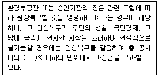
- 3
- 5
- 8
- 15
(정답률: 42%)
3과목: 조경설계
41. 기본설계(Preliminary Design)에 대한 설명으로 옳지 않은 것은?
- 실시설계의 이전단계이다.
- 소규모 프로젝트에서는 생략될 수 있다.
- 프로젝트의 토지이용과 동선체계를 정하는 단계이다.
- 설계개요서와 공사비 계산서 등의 서류를 만든다.
(정답률: 33%)
42. 옥상조경에 대한 설명으로 틀린 것은?
- 건조에 강한 나무를 선택하는 것이 좋다.
- 식물을 식재할 면적은 전체 옥상면적의 1/2정도가 적합하다.
- 지반의 구조체에 따른 하중의 위치와 구조 골격의 관계를 검토한다.
- 사용 조합토는 부엽토와 양토 및 모래를 섞고 약간의 유기질 비료를 넣어도 좋다.
(정답률: 62%)
43. 조경설계기준의 각종 관리시설 설계 시 고려해야 할 사항으로 가장 거리가 먼 것은?
- 단주(볼라드)의 배치간격은 1.5m 정도로 설계한다.
- 자전거보관시설은 비⋅햇볕⋅대기오염으로부터 자전거를 보호할 수 있도록 지붕과 같은 시설을 갖추어야 한다.
- 공중화장실은 장애인의 진입이 가능하도록 경사로를 설치하며, 경사로 폭은 휠체어의 통행이 가능한 120cm 이상으로 한다.
- 플랜터(식수대)는 배식하는 수목의 규격에 대응하는 생존 최소 토심을 확보한다.
(정답률: 46%)
44. 벤치의 배치 계획 시 Sociopetal 형태로 했다면 인간의 심리적 요소 중 어느 욕구에 해당하는가?
- 사회적 접촉에 대한 욕구
- 안정에 대한 욕구
- 프라이버시에 대한 욕구
- 장식에 대한 욕구
(정답률: 69%)
45. 대당 주차 면적이 가장 적게 소요되는 주차 형식은? (단, 형식별 주차 대수는 모두 동일함)
- 30°주차
- 45°주차
- 60°주차
- 90°주차
(정답률: 62%)
46. 조경설계기준상의 디딤돌(징검돌) 놓기 설계시 옳지 않은 것은?
- 보행에 적합하도록 지면과 수평으로 배치한다.
- 디딤돌 및 징검돌의 장축은 진행방향에 평행이 되도록 배치한다.
- 디딤돌은 2연석, 3연석, 2⋅3연석, 3⋅4연석 놓기를 기본으로 설계한다.
- 정원을 제외한 배치 간격은 어린이와 어른의 보폭을 고려하여 결정하되, 일반적으로 40~70cm로 하며 돌과 돌 사이의 간격이 8~10cm 정도가 되도록 배치한다.
(정답률: 60%)
47. 다음 먼셀 색상기호 중 채도가 가장 높은 색은?
- 5BG
- 5R
- 5B
- 5P
(정답률: 69%)
48. 다음 설명에 적합한 형식미의 원리는?
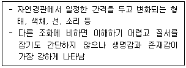
- 비례미(Proportion)
- 통일미(Unity)
- 운율미(Rhythm)
- 변화미(Variety)
(정답률: 63%)
49. 어린이공원은 어린이라는 특정 연령층을 대상으로 조성되는 목적 공원이다. 설계 시 고려사항으로 거리가 먼 것은?
- 의자, 평상, 파고라 등 휴식시설은 가급적 한 곳으로 모은다.
- 부모, 노인 등 보호자 및 청소년을 위한 공간도 고려해야 한다.
- 미끄럼대는 가급적 북향으로 하며, 그네는 태양과 맞보지 않도록 한다.
- 지형은 단순화시키고 안전을 위하여 주변과 격리되도록 구성한다.
(정답률: 49%)
50. 아파트 외곽 담장은 Altman이 구분한 인간의 영역 중에 어느 영역을 구분하고 있는가?
- 1차영역과 2차영역
- 2차영역과 공적영역
- 1차영역과 공적영역
- 해당되는 영역이 없다.
(정답률: 66%)
51. 경관을 사진, 슬라이드 등의 방법을 통하여 평가자에게 보여주고 양극으로 표현되는 형용사 목록을 제시하여 경관을 측정하는 방법은?
- 순위조사(Rank-ordering)
- 리커트 척도(Likert Scale)
- 쌍체 비교법(Paired Comparison)
- 어의구별척(Semantic Differential Scale)
(정답률: 56%)
52. 연극무대에서 주인공을 향해 녹색과 빨간색 조명을 각각 다른 방향으로 비추었다. 주인공에게는 어떤 색의 조명으로 비추어질까?
- Cyan
- Gray
- Magenta
- Yellow
(정답률: 68%)
53. 그림과 같이 도형의 한쪽이 튀어나와 보여서 입체로 지각되는 착시 현상은?
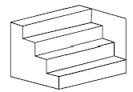
- 대비의 착시
- 반전 실체의 착시
- 착시의 분할
- 방향의 착시
(정답률: 60%)
54. 조경설계기준상 생태못 및 인공습지 설계와 관련된 설명으로 옳지 않은 것은?
- 일반적으로 종다양성을 높이기 위해 관목숲, 다공질 공간과 같은 다른 소생물권과 연계되도록 한다.
- 야생동물 서식처 목적을 위해 최소 폭은 5m 이상 확보하고 주변 식재를 위해 공간을 확보한다.
- 수질정화 목적의 못은 수질정화 시설의 유출부에 설치하여 2차 처리된 방류수(방류수 10ppm)를 수원으로 한다.
- 수질정화 목적의 못 안에 붕어와 같은 물고기를 도입하고, 부레옥잠, 달개비, 미나리와 같은 수질정화 기능이 있는 식물을 배식한다.
(정답률: 68%)
55. 우리나라의 제도통칙에서는 투상도의 배치는 몇 각 법으로 작도함을 원칙으로 하고 있는가?
- 제1각법
- 제2각법
- 제3각법
- 제4각법
(정답률: 66%)
56. 다음 설명의 ( ) 안에 적합한 값은?
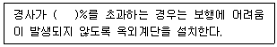
- 12
- 14
- 16
- 18
(정답률: 44%)
57. 조경제도에서 치수기입에 대한 설명으로 옳은 것은?
- 치수의 단위는 cm를 원칙으로 한다.
- 치수보조선은 치수선과 직교하는 것이 원칙이다.
- 치수선은 주로 조감도, 시설물상세도, 투시도 등 다양한 도면에 사용된다.
- 일반적인 방법으로 수치 치수를 기입하기에는 치수선이 너무 짧을 경우, 수치를 세로로 기입할 수 있다.
(정답률: 42%)
58. 다음 그림과 같은 도형에서 화살표 방향에서 본 투 상을 정면으로 할 경우 우측면도로 올바른 것은?
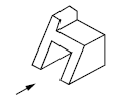
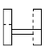
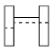
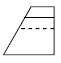
(정답률: 72%)
59. 표제란에 대한 설명으로 옳은 것은?
- 도면명은 표제란에 기입하지 않는다.
- 도면 제작에 필요한 지침을 기록한다.
- 범례는 표제란 안에 반드시 기입해야 한다.
- 도면번호, 작성자명, 작성일자 등에 관한 사항을 기입한다.
(정답률: 66%)
60. 한 도면에서 2종류 이상의 선이 같은 장소에 겹치게 될 때 우선순위(큰 것 → … → 작은 것)로 옳은 것은?
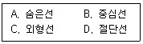
- C → A → D → B
- C → A → B → D
- D → A → C → B
- A → B → C → D
(정답률: 58%)
4과목: 조경식재
61. 수목의 전정에 관한 설명이 옳은 것은?
- 전체적인 수형의 균형에 중점을 두어 수시로 잘라준다.
- 재화습성을 감안한 화아분화가 형성되는데 차질이 없도록 한다.
- 철쭉류는 1년 내내 언제든지 가능하다.
- 내한성이 없는 수목이라도 강전정을 하여 신초가 도장하도록 유도하는 것이 좋다.
(정답률: 61%)
62. 다음 설명과 가장 관련이 깊은 용어는?
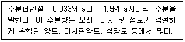
- 흡습수
- 유효수분
- 중력수
- 포장용수량
(정답률: 60%)
63. 식재기능별 수종의 요구 특성에 대한 설명이 옳지 않은 것은?
- 방화식재는 잎이 두텁고, 함수량이 많은 수종이어야 한다.
- 지표식재는 수형이 단정하고 아름다운 수종이어야 한다.
- 방풍⋅방설식재는 지하고가 높은 천근성 교목이어야 한다.
- 유도식재는 수관이 커서 캐노피를 이루거나 원추형이어야 한다.
(정답률: 65%)
64. 산울타리에 적합한 수종으로 가장 거리가 먼 것은?
- 꽝꽝나무(Ilex crenata)
- 돈나무(Pittosporum tobira)
- 탱자나무(Poncirus trifoliata)
- 졸참나무(Quercus serrata)
(정답률: 61%)
65. 척박한 토양에 잘 견디는 수종으로만 이루어진 것은?
- 오동나무(Paulownia coreana), 서어나무(Carpinus laxiflora)
- 단풍나무(Acer palmatum), 자작나무(Betula platyphylla var. japonica)
- 자귀나무(Albizia julibrissin), 향나무(Juniperus chinensis)
- 은행나무(Ginkgo biloba), 왕벚나무(Prunus yedoensis)
(정답률: 46%)
66. 다음 중 6~7월에 피고, 꽃이 백색으로 피었다가 황색으로 변하는 수종은?
- 나무수국(Hydrangea paniculata)
- 등(Wisteria floribunda)
- 미선나무(Abeliophyllum distichum)
- 인동덩굴(Lonicera japonica)
(정답률: 41%)
67. 화살나무(Euonymus alatus)의 특징 설명이 틀린 것은?
- 노박덩굴과이다.
- 생장속도가 느리며, 병해충에 약하다.
- 어린가지에 2~4줄의 코르크질 날개가 있다.
- 보통 3개의 꽃이 달리며, 5월에 피고 지름 10mm로서 황록색이다.
(정답률: 49%)
68. 관목(Shrub, 작은 키 나무)의 분류로 가장 거리가 먼 것은?
- 병아리꽃나무(Rhodotypos scandens)
- 금송(Sciadopitys verticillata)
- 황매화(Kerria japonica)
- 눈측백(Thuja koraiensis)
(정답률: 61%)
69. 식재기능을 공간조절, 경관조절, 환경조절 기능으로 나눌 경우 공간조절 식재 기능은?
- 지표식재
- 녹음식재
- 유도식재
- 방풍식재
(정답률: 61%)
70. 다음 식물의 특성 설명이 옳지 않은 것은?
- 모란은 목본식물이고 작약은 초본식물이다.
- 붓꽃과(科)의 식물에는 창포와 꽃창포가 있다.
- 얼레지, 처녀치마는 우리나라 전국 각지에 자생하는 숙근성 여러해살이풀이다.
- 부들은 연못가와 습지에서 자라는 다년초로서 근경은 옆으로 뻗고 수염뿌리가 있다.
(정답률: 33%)
71. 일반적인 음수(陰樹)의 설명으로 옳지 않은 것은?
- 음수는 양수보다 광보상점이 낮다.
- 일반적으로 음수는 양수에 비해 어릴 때의 생장이 왕성하다.
- 음수가 생장할 수 있는 광량은 전수광량의 50% 내외이다.
- 양수와 음수의 구분은 그늘에서 견딜 수 있는 내음성의 정도로 구분한다.
(정답률: 60%)
72. 다음 중 속명(屬名)이 Abies가 아닌 것은?
- 구상나무
- 분비나무
- 종비나무
- 전나무
(정답률: 43%)
73. 다음 설명과 같은 활용성이 높은 번식방법은?
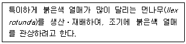
- 파종
- 접목
- 분주
- 삽목
(정답률: 48%)
74. . 다음에 설명하는 수종은?
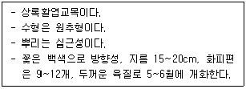
- 서어나무(Carpinus laxiflora)
- 버즘나무(Platanus orientalis)
- 버드나무(Salix koreensis)
- 태산목(Magnolia grandiflora)
(정답률: 56%)
75. Allee 성장형으로 본 식물종의 성장률 설명으로 옳은 것은?
- 중간밀도에서 다른 경우보다 더 크다.
- 낮은 밀도에서 다른 경우보다 더 크다.
- 높은 밀도에서 다른 경우보다 더 크다.
- 항상 동등하게 성장한다.
(정답률: 46%)
76. 고속도로 식재의 기능과 종류의 연결이 옳지 않은 것은?
- 휴식 - 녹음식재
- 주행 - 시선유도식재
- 방재 - 임연보호식재
- 사고방지 – 완충식재
(정답률: 52%)
77. 양버들(Populus nigra var. Italica Koehne)에 관한 설명으로 틀린 것은?
- 버드나무과(科) 수종이다.
- 수형은 원주형으로 빗자루처럼 좁은 형태이다.
- 성상은 낙엽활엽교목이고 뿌리는 천근성이다.
- 우리나라 자생수종으로 가을에 붉은 단풍이 아름답다.
(정답률: 60%)
78. 조경 식물의 일반적인 선정 기준으로 가장 거리가 먼 것은?
- 미적(美的)⋅실용적 가치가 있는 식물
- 식재지역 환경에 적응성이 큰 식물
- 야생동물의 먹이가 풍부한 식물
- 시장이나 묘포(苗圃)에서 입수하기 용이한 식물
(정답률: 56%)
79. 토양의 물리적 성질로 옳지 않은 것은?
- 배수 불량지는 양질의 토양으로 객토해야 한다.
- 수목 생육에는 일반적으로 양토나 사양토가 적합하다.
- 입단(粒團, Aggregated)구조의 토양은 딱딱하고 통기성이 불량하여 수목생육에 좋지 않게 된다.
- 토양입자의 거침에 따라 사토, 사양토, 양토, 식토로 구분되며, 후자로 갈수로 점토의 함량이 많아진다.
(정답률: 57%)
80. 우리나라 수생식물은 정수, 부엽, 침수, 부유의 4가지 유형으로 구분된다. 다음 중 부유식물에 해당되는 것은?
- 창포
- 수련
- 나사말
- 생이가래
(정답률: 49%)
5과목: 조경시공구조학
81. 공사현장 관리조직을 구성하는 가장 부적합한 것은?
- 직책과 권한의 위임을 분명히 한다.
- 공사착수 후에 현장관리 조직을 편성한다.
- 각 부분의 관계를 고려하여 규칙을 마련한다.
- 일의 성격을 명확히 해서 분류, 통합한다.
(정답률: 68%)
82. 콘크리트의 표준배합 설계요소에 포함되지 않는 것은?
- 슬럼프값 결정
- 물-시멘트비 결정
- 단위수량의 결정
- 굵은 골재의 최소치수 결정
(정답률: 47%)
83. 다음 중 수해에 접하는 구조물에 가장 적합한 시멘트는? (문제 오류로 가답안 발표시 1번으로 발표되었지만 확정답안 발표시 모두 정답처리 되었습니다. 여기서는 가답안인 1번을 누르면 정답 처리 됩니다.)
- 고로 시멘트
- 보통포틀랜드 시멘트
- 조강포틀랜드 시멘트
- 중용열포틀랜드 시멘트
(정답률: 63%)
84. 그림과 같은 동질(同質), 동단면(同斷面)의 장주(長柱)압축재로 축방향 하중에 대한 강도의 상호관계로서 옳은 것은?
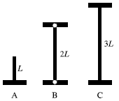
- A ＞ B ＞ C
- A ＞ B = C
- A = B = C
- A = B ＜ C
(정답률: 48%)
85. 대기 중의 탄산가스의 작용으로 콘크리트 내 수산화칼슘이 탄산칼슘으로 변하면서 알칼리성을 상실하는 현상은?
- 레이턴스
- 크리프
- 슬럼프
- 중성화
(정답률: 61%)
86. 다음 중 돌공사에 대한 설명이 틀린 것은?
- 석재는 인장력에 약하다.
- 대리석은 내구성이 약하고, 내화성이 떨어진다.
- 구조용 석재는 흡수율 30% 이하의 것을 사용한다.
- 돌쌓기 공사에 사용되는 긴결재로는 철재를 사용한다.
(정답률: 38%)
87. 다음 중 시방서에 포함될 내용이 아닌 것은?
- 사용재료의 종류와 품질
- 단위공사의 공사량
- 시공상의 일반적인 주의사항
- 도면에 기재할 수 없는 공사내용
(정답률: 45%)
88. 구조관련 용어에 대한 설명으로 틀린 것은?
- 모멘트(Moment) : 어느 한 점에 대한 회전능률이다.
- 모멘트(Moment) : 거리에 반비례 한다.
- 지점(Support : 구조물의 전체가지지 또는 연결된 지점이다.
- 힌지(Hinge) : 회전은 가능하지만 어느 방향으로도 이동될 수 없다.
(정답률: 53%)
89. 다음 중 다짐작업을 효과적으로 수행할 수 없는 건설기계의 종류는?
- 탬핑롤러
- 불도저
- 래머
- 스크레이퍼
(정답률: 51%)
90. 건설공사의 시공 시 작성하는 공정표 중 공사비용절감을 목적으로 개발된 공정표는?
- 바 차트(Bar Chart)
- 칸트 차트(Gantt Chart)
- CPM(Critical Path Method)
- PERT(Program Evaluation and Review Technique)
(정답률: 53%)
91. 목재의 강도에 관한 설명 중 옳지 않은 것은?
- 벌목의 계절은 목재강도에 영향을 끼친다.
- 일반적으로 응력의 방향이 섬유방향에 평행인 경우 압축강도가 인장강도보다 작다.
- 목재의 건조는 중량을 경감시키지만 강도에는 영향을 끼치지 않는다.
- 섬유포화점 이하에서는 함수율 감소에 따라 강도가 증대한다.
(정답률: 63%)
92. A점과 B점의 표고는 각각 125m, 150m이고, 수평거리는 200m이다. AB간은 동경사라고 가정할 때, AB 선상에 표고가 140m가 되는 점의 A점으로부터 수평 거리는?
- 40m
- 80m
- 120m
- 160m
(정답률: 50%)
93. 합판거푸집의 설치 및 해체에 관한 건설표준품셈에서 대상 구조물이 측구, 수로, 우물통 등 비교적 간단한 벽체 구조, 교량 및 건축 슬래브인 경우에는 몇 회 사용하는 것이 가장 합당한가? (단, 유형은 보통으로 한다.)
- 2회
- 3회
- 4회
- 6회
(정답률: 34%)
94. 그림과 같이 사각형분할로 구분되는 지역에서 정지 공사를 위해 각 지점의 계획절토고를 측정하였다. 점고법에 의한 계획지반고에 준거하여 절토할 토공량은? (단, FL±0)
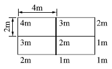
- 38m3
- 40m3
- 66m3
- 68m3
(정답률: 47%)
95. 배수지역 내 우수의 유출을 환경 친화적으로 조절하기 위한 방법이 아닌 것은?
- 투수성 포장을 한다.
- 체수지나 연못을 만든다.
- 지하 배수관로를 많이 만든다.
- 주차장이나 공원하부에 저수조를 만든다.
(정답률: 53%)
96. 0.4m3 용량의 유압식 백화(Back-Hoe)를 이용하여 작업상태가 양호한 자연상태의 사절토를 굴착 후 덤프트럭에 적재하려할 때, 시간당 굴착 작업량(m3)은?
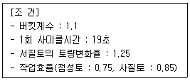
- 50.02
- 56.69
- 78.16
- 192.79
(정답률: 42%)
97. 인공살수(人工撒水) 시설의 설계를 위한 관개강도(灌漑强度) 결정에 영향을 미치는 요인이 아닌 것은?
- 작업시간
- 가압기의 능력
- 토양의 종류, 경사도
- 지피식물의 피복도(被覆度)
(정답률: 41%)
98. 도로설계의 수직노선 설정 시 종단곡선으로 사용되는 곡선은?
- 클로소이드곡선
- 렘니스케이트곡선
- 2차 포물선
- 3차 포물선
(정답률: 34%)
99. 캔틸레버보에 집중하중을 받고 있을 때 작용하는 힘에 대한 설명이 옳은 것은?
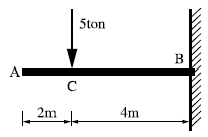
- A~C 구간의 전단력이 0이며, B~C 구간의 전단력은 -5ton이다.
- B지점의 반력은 수직, 수평반력과 휨모멘트 반력이 작용한다.
- 휨모멘트의 크기는 10t⋅m이다.
- B점의 반력의 크기는 –50ton이다.
(정답률: 30%)
100. 다음 건설재료 중 할증률이 가장 큰 것은?
- 각 재
- 일반용합판
- 잔 디
- 경계블록
(정답률: 54%)
6과목: 조경관리론
101. 수목 유지관리 중 정지(Training)⋅전정(Pruning)의 목적에 따른 분류가 가장 부적합한 것은?
- 갱신을 위한 전정 : 소나무
- 조형을 위한 전정 : 향나무
- 생장조정을 위한 전정 : 묘목
- 개화결실의 촉진을 위한 전정 : 매화나무
(정답률: 50%)
102. 조경현장의 근로자가 경련(발작)을 할 때 응급처치 방법으로 옳지 않은 것은?
- 발작이 멈출 때까지 환자를 안전하게 보호해야 한다.
- 환자의 치아 사이로 어떠한 물체도 끼우면 아니 된다.
- 우선 환자를 붙잡아 2차 상해방지와 경련(발작)이 조기에 진정될 수 있도록 한다.
- 환자에게 먹을 거나 마실 것을 줘서는 안되지만 환자가 당뇨병 환자라면 환자의 혀 아래 각설탕을 넣는 것은 가능하다.
(정답률: 45%)
103. 다음 식물의 병⋅충해 방제 방법이 생태계에 가장 치명적인 해를 주는 것은?
- 기계적 방법에 의한 방제
- 생물적 방법에 의한 방제
- 재배적 방법에 의한 방제
- 화학적 방법에 의한 방제
(정답률: 67%)
104. 이식에 적합한 조경수의 상태로 가장 거리가 먼 것은?
- 뿌리가 되도록 무성하게 많이 꼬인 수목
- 겨울철에 동아가 가지마다 뚜렷한 수목
- 성숙 잎의 색이 짙은 녹색이며, 크고 촘촘히 달린 수목
- 골격지가 적절한 간격의 4방향으로 균형 있게 뻗은 수목
(정답률: 56%)
1⑤. 다음 중 미량원소(Micro Element)로만 구성된 것은?
- Fe, Mg, S, Mo CI
- Fe, B, Zn, Mo, Mn
- Fe, Si, Cu, S, CI
- Fe, Ca, Cu, Mo, B
(정답률: 57%)
106. 공정관리를 위한 횡선식 공정표 중 현장 기사들이 주로 사용하고 있으면서 작업소요일수가 명확하게 표시되어 있는 공정표는?
- 절선공정표
- 열기식 공정표
- 바 차트(Bar Chart)
- 네트워크 공정표
(정답률: 50%)
107. 시설물에 따른 점검 빈도가 적합하지 않은 것은?
- 많은 비가 내린 후 유입토사에 의해 우수 배수 관의 막힘, 배수 불량 부분의 점검 : 필요시마다.
- 관 내에 지하수, 오수 등 침입의 유무 및 관내의 흐름 상태를 점검 : 1회/2년
- U형 측구, V형 배수로 등의 지반 침하가 현저하거나 역구배 및 파손된 장소의 유무 점검 : 1회/6개월
- 운동장 표층의 파손상태, 물웅덩이, 표층의 안정상태 점검 : 1회/6개월
(정답률: 53%)
108. 잡초가 발아하기 전에 지표면에 약제를 살포하여 잡초종자를 발아하지 못하게 하거나 발아 직후 어린식물의 생육을 멈추게 하는 제초제를 무엇이라 하는가?
- 선택성 제초제
- 토양처리 제초제
- 경엽처리 제초제
- 비선택성 제초제
(정답률: 38%)
109. 다음 중 토성별 단위 g당 토양의 공극량(%)이 가장 큰 것은?
- 사토
- 사양토
- 미사질 양토
- 식토
(정답률: 40%)
110. 토양 pH가 높을 때 식물에 의한 흡수가 가장 어려운 성분은?
- Mo
- Fe
- Ca
- S
(정답률: 42%)
111. 작업자가 업무에 기인하여 사망, 부상 또는 질병에 이환되지 않는 “무재해” 이념의 3원칙에 해당하지 않는 것은?
- 무(Zero)의 원칙
- 선취의 원칙
- 관리의 원칙
- 참가의 원칙
(정답률: 31%)
112. 골프장 잔디의 관수와 관련된 설명이 옳은 것은?
- 가능한 한 심층관수 하되 자주하지 않는다.
- 기상조건에 관계없이 관개계획을 수립한다.
- 관수 소모량의 120%를 관수하여 위조를 막는다.
- 실린지 효과를 위해 잔디와 토양이 모두 충분히 젖도록 살수한다.
(정답률: 35%)
113. 도시공원녹지(U)와 자연공원(N) 관리특성 상, 가장 큰 차이점은?
- U는 자원의 보전보다는 이용자의 레크레이션 요구도에 집착한다
- U는 이용관리적 측면이, N은 시설관리적 측면이 우선된다.
- U는 안전하고 쾌적한 이용의 극대화를 목표로 하며, N은 상대적으로 자연자원의 보존이 고려되어야 한다.
- 레크레이션 경험의 창출을 위해 U와 N은 모두 서비스(Service) 관리에 주력해야 한다.
(정답률: 63%)
114. 운영관리 계획에서 양적(量的)인 변화에 적합하지 않은 것은?
- 간이화장실의 중설량
- 고사목, 밀식지의 수목제거
- 이용자 증가에 따른 출입구의 임시 개설
- 잔디블럭으로 포장된 주차공간의 도입
(정답률: 43%)
115. 품질관리(QC)의 목표로 가장 거리가 먼 것은?
- 자기개발
- 불량률의 감소
- 고급품의 생산
- 생산능률의 향상
(정답률: 56%)
116. 기주 범위가 가장 넓은 다범성 병균은?
- 녹병균
- 잎마름병균
- 버즘나무 탄저병균
- 아밀라리아뿌리썩음병균
(정답률: 29%)
117. 탄질비가 20인 유기물의 탄소 함량이 60%이면 질소함량은?
- 1.2%
- 3.0%
- 8.0%
- 12%
(정답률: 41%)
118. 해충의 주화성(走化性)을 이용하는 약제는?
- 유인제
- 해독제
- 훈연제
- 생물농약
(정답률: 49%)
119. 조경 수목의 재해방지 대책을 위한 관리 작업에 해당하지 않는 것은?
- 침수 상습 지대는 수목 주위에 배수로를 설치해 준다.
- 태풍에 쓰러진(도복) 수목은 뿌리를 보호한 후 재활용을 위해 가을까지 그대로 둔다.
- 강설 중이나 직후에는 수관에 쌓이 눈을 즉시 제거해 줌으로서 가지를 보호한다.
- 태풍, 강풍의 예상시기에는 수목에 지주목이나 철선 등을 묶어 도복을 방지한다.
(정답률: 65%)
120. 멀칭(Mulching)의 효과에 해당되지 않는 것은?
- 토양수분 유지
- 토양비옥도 증진
- 토양구조 개선
- 토양 고결화 촉진
(정답률: 56%)